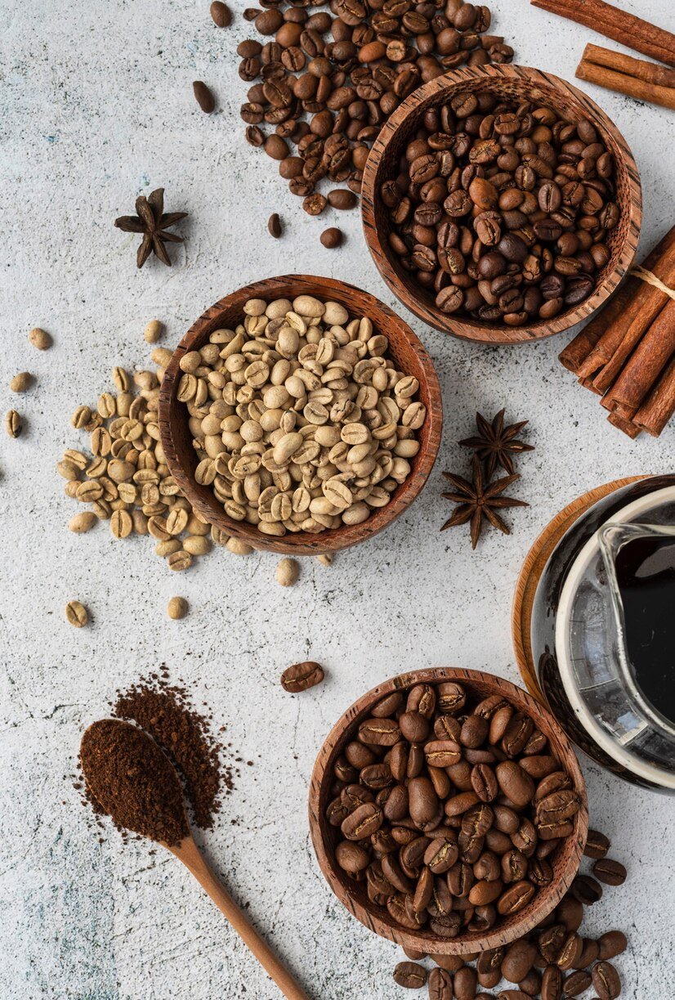

🌐 PLACE & LIFE HACK
🍪 Best way to store coffee: To maintain the freshness of ground coffee, store it in an airtight container in a cool, dark place, away from light and heat. For even better freshness, you can keep it in the fridge, but use it within a week as cold can diminish its aroma over time.
🍪 Using cold water for coffee: If you want to make perfect cold coffee, try brewing it with cold water. This slows down the extraction process and reduces bitterness, resulting in a smoother, less acidic taste. The "cold brew" method, where ground coffee is steeped in cold water for 12-24 hours, is a popular technique for cold coffee.
🍪 Add a pinch of salt: If your coffee is too bitter, try adding a pinch of salt. This can help balance the flavor by reducing excess bitterness, making the coffee smoother. Many people use this trick to enhance the taste of cheaper or older beans.
🍪 Use chocolate to enhance flavor: If you want to add chocolatey notes to your coffee, try melting some dark chocolate and stirring it into your cup. This will not only give your coffee a rich flavor but also make it creamier and more indulgent. It's also a great way to make coffee more appealing for those who don't enjoy overly bitter coffee.
🍪 Milk at a low temperature: For creamier, frothier milk when making lattes or cappuccinos, heat the milk to about 60-65°C (140-150°F) rather than bringing it to a boil. This will help the milk retain its texture and sweetness, unlike overheated milk, which can become bitter.

- アクセス
-
State of Bahia in Brazilブラジル、バイーア州、ラウロ・デ・フレイタス、エストラーダ・ド・ココ
Brazil, Bahia, Lauro de Freitas, Estrada do CocoPostal Code: 42700-000
Tel: (71) 3287-9700